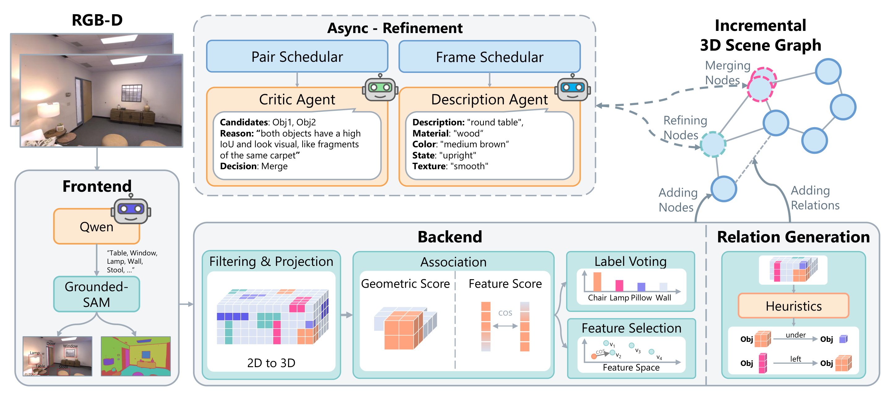

Think While You Map
Asynchronous Vision-Language Agents for Incremental 3D Scene Graphs
1University of Stuttgart, VISUS · 2IMPRS-IS
Abstract
Open-vocabulary 3D scene graph methods typically operate in two stages: first reconstruct, then enrich with vision-language models, leaving the graph unqueryable during exploration. We argue that this sequential coupling is unnecessary and propose an asynchronous architecture in which lightweight online mapping runs concurrently with heavyweight semantic refinement. A probabilistic voxel-based backbone maintains stable object identities incrementally, while background VLM agents progressively enrich the graph. This framework resolves duplicate object tracks through semantic loop closure, attaches fine-grained visual attributes, and infers spatial relations between objects. A multi-target frame scheduler amortizes VLM cost by selecting a small set of informative frames that jointly cover multiple targets. he resulting scene graph is queryable during exploration and grows in semantic richness over time. Our method outperforms existing open-vocabulary 3D scene graph methods on semantic segmentation (ScanNet, Replica) and surpasses the prior state-of-the-art across three visual grounding benchmarks (Sr3D+, Nr3D, ScanRefer) by 15.3 to 18.8 A@0.25.
Method

Method overview. (i) The frontend extracts grounded instances from each RGB-D frame. (ii) The backend associates them into persistent 3D tracks with probabilistic voxel scoring, while (iii) spatial edges are derived deterministically from 3D geometry. (iv) Two asynchronous VLM agents, a Critic Agent for semantic loop closure and a Description Agent for attribute enrichment, progressively refine the graph without blocking online operation.
- Asynchronous architecture. Lightweight online mapping is decoupled from heavyweight VLM reasoning, yielding a graph that is queryable from the first frame and grows in semantic richness without blocking exploration.
- Semantic loop closure. A VLM-in-the-loop Critic Agent detects and merges duplicate object tracks caused by incremental association drift, similar to geometric loop closure in SLAM.
- Multi-target frame scheduler. The Description Agent is fed a small number of informative frames, each depicting multiple undescribed objects, so a single VLM call enriches several nodes at once.
Key Results
On open-vocabulary 3D semantic segmentation, ThinkGraphs outperforms all batch-based methods on Replica (0.58 mAcc / 0.37 mIoU / 0.61 f-mIoU) and achieves the highest mIoU and f-mIoU on ScanNet while remaining incremental and never requiring a complete reconstruction.
BibTeX
@inproceedings{bickici2026thinkgraphs,
title = {Think While You Map: Asynchronous Vision-Language Agents
for Incremental 3D Scene Graphs},
author = {Bickici, Deniz and Pabst, Michael and Schmalstieg, Dieter},
booktitle = {Proceedings of the European Conference on Computer Vision (ECCV)},
year = {2026}
}